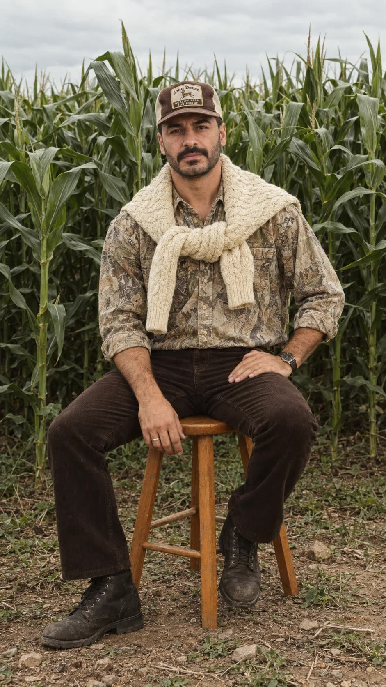

GPT Image 2.6 Sunburst (OpenAI)
Turn a photo of yourself into a new look with one text prompt.

What it is
GPT Image 2.6 Sunburst is an image model from OpenAI, hosted on Replicate. It makes images from a text prompt and edits images you pass in. OpenAI describes it as its image model for detailed work. The page does not say whether it is open source.
What it can do
- Generates images from a text prompt
- Edits images you pass in
- Accepts one or more reference images
- Choose aspect ratio, e.g. 1:1 or 16:9
- Choose quality level from low to max
- Create up to 10 images per call
What you could use it for
Era makeover portrait
You could upload a photo of yourself and ask for a 1920s film star look, while telling the model to keep your face recognizable.
Different image sizes
You could pick an aspect ratio like 1:1 or 16:9 to fit the place where you want to share the picture.
Compare several versions
You could create up to 10 images in one call and pick the one you like best.
Combine reference images
You could pass in more than one reference image and ask the model to combine them into a new picture.
How to start
- Open an image model that edits photos (link below).
- Upload your photo.
- Paste this prompt: “Transform this photo into a black-and-white 1920s silent film star portrait: dramatic studio lighting, soft vignette, vintage film grain, a slicked-back period hairstyle and a dark tuxedo with a bow tie. Keep his face, dark hair and beard exactly recognizable, and add no text.”
What it costs
Good to know: Price depends on the quality setting and no flat per-image price is listed; you can also pass your own OpenAI key to pay OpenAI directly.
A look inside

Official links
Sources
How this reel was made
Partner links: I may earn a commission if you sign up. It costs you nothing extra.